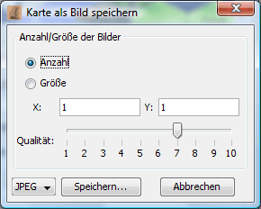

Hier kann man die Anzahl der Dateien in x/y-Richtung bzw. die Größe des Bildes in Pixeln einstellen. Durch Auswahl des Formats JPEG oder PNG erstellt Magellan die Dateien im angegebenen Format. Ist PNG gewählt, wird die Qualitätsangabe ignoriert. Nach Klick auf "Speichern" kann man in einer Dateiauswahlbox den Dateinamen angeben.
Achtung:
Bei sehr großen Karten kann diese Funktion enorm viel Speicher verbrauchen (mehrere 100MB). In diesem Fall sollte man kleinere Karten erstellen, indem man eine maximale Größe pro Datei festlegt.